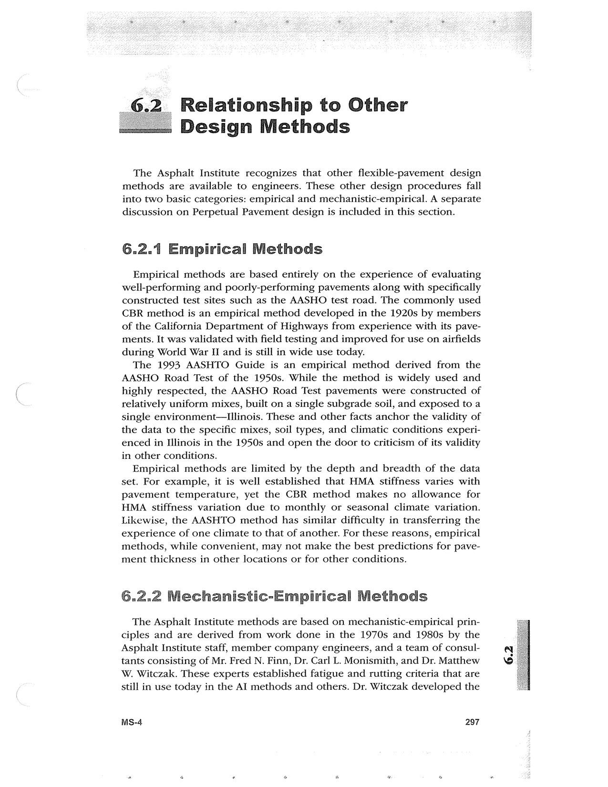

PDF page 331 · book page sequence 297


Searchable transcription
Unproofread OCR · 372 detected words; mean OCR confidence 95.28. Check technical values, symbols and table columns against the scan.
Relationship to Other Design Methods
The Asphalt Institute recognizes that other flexible-pavement design methods are available to engineers. These other design procedures fall into two basic categories: empirical and mechanistic-empirical. A separate discussion on Perpetual Pavement design is included in this section.
6.2.1 Empirical Methods
Empirical methods are based entirely on the experience of evaluating well-performing and poorly-performing pavements along with specifically constructed test sites such as the AASHO test road. The commonly used CBR method is an empirical method developed in the 1920s by members of the California Department of Highways from experience with its pave- ments. It was validated with field testing and improved for use on airfields during World War I and is still in wide use today.
The 1993 AASHTO Guide is an empirical method derived from the AASHO Road Test of the 1950s. While the method is widely used and highly respected, the AASHO Road Test pavements were constructed of relatively uniform mixes, built on a single subgrade soil, and exposed to a single environment—Illinois. These and other facts anchor the validity of the data to the specific mixes, soil types, and climatic conditions experi- enced in Illinois in the 1950s and open the door to criticism of its validity in other conditions.
Empirical methods are limited by the depth and breadth of the data set. For example, it is well established that HMA stiffness varies with pavement temperature, yet the CBR method makes no allowance for HMA stiffness variation due to monthly or seasonal climate variation. Likewise, the AASHTO method has similar difficulty in transferring the experience of one climate to that of another. For these reasons, empirical methods, while convenient, may not make the best predictions for pave- ment thickness in other locations or for other conditions.
6.2.2 Mechanistic-Empirical Methods
The Asphalt Institute methods are based on mechanistic-empirical prin- ciples and are derived from work done in the 1970s and 1980s by the Asphalt Institute staff, member company engineers, and a team of consul- tants consisting of Mr. Fred N. Finn, Dr. Carl L. Monismith, and Dr. Matthew W. Witczak. These experts established fatigue and rutting criteria that are still in use today in the AI methods and others. Dr. Witczak developed the
MS-4 297